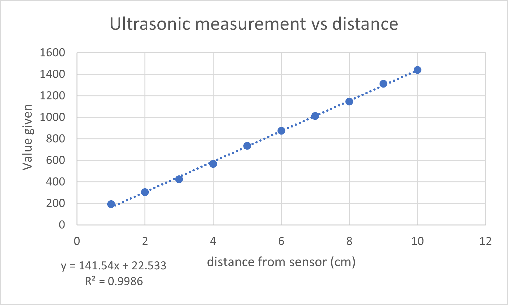
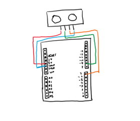
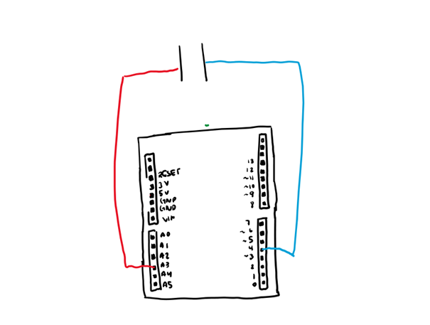
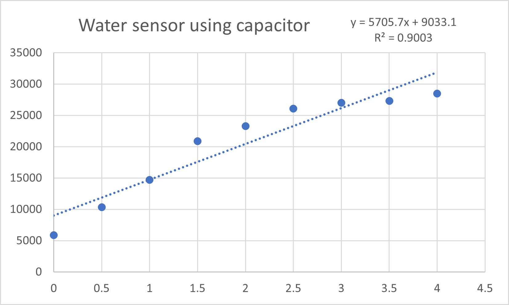

WEEK 6: ELECTRONIC INPUT DEVICES
<br>
<b> Sensors </b>
This week we were tasked with programming sensors to detect different values. At first we had to choose one of the sensors available in the lab before building our own capacitive sensor. I decided to try out the ultrasonic sensor as I saw that Andre had used it in his project last week and thought that it looked really cool.
To set up the sensor I just followed the instruction from [this](https://create.arduino.cc/projecthub/abdularbi17/ultrasonic-sensor-hc-sr04-with-arduino-tutorial-327ff6) example code.
It had no problems running and picking up values so I decided to measure the distance of a block from the sensor at 1cm intervals. The results are shown below:
<div class = "center">

</div>
This is almost a perfect linear relationship yay!
We see from the linear equation that the values can be converted to distances by multiplying it by a factor and then adding roughly 22. This was strange for me to see at first as I would have expected the line to go through the origin. However when I played around with this and tried putting the block right up to the sensor it would read incredibly high values. I’m not sure if the calibration was just off or if the sensor simply couldn’t detect the object when it was that close and therefore measured an object extremely far away. It would be interesting to look into the smallest distance the sensor could reasonably pick up.
I wanted to see if I could account for this conversion in my Arduino code so that I would not have to plot this relationship and I could get the information directly from Serial Monitor. I googled that the ultrasonic sensor works by using sound waves which we can assume have a speed of 340 m/s in air. If we multiply this by the duration of the sound wave and divide the wavelength by two we get the distance of the sound wave to travel to the object and back. I was therefore able to directly measure for distance as shown in the code below. I imagine this would be harder or impossible to do for some more complex sensors such as pressure.
<pre><code>
duration = pulseIn(echo, HIGH);
distance = duration*0.034 / 2;
Serial.print("Distance: ");
Serial.println(distance);
//Get the sound wave reflection time and convert to cm and print on serial monitor.
}
</code></pre>
After completing this step I decided to remove the delay function in my code. This ended up taking some time and proved quite difficult for me. I had to create new variables to define my previous millies, intervals of time (delay) and trig state and echo state. Once I figured out how to properly embed things in if statements it seemed to work. The code is shown below:
<pre><code>
void loop()
{
// check to see if it's time to change the state of the LED
unsigned long currentMillis = millis();
unsigned long previousMillis=0;
int duration = 0;
int distance = 0;
if((trig == LOW) && (currentMillis - previousMillis1 >= intervaloff))
{
digitalWrite(trig, LOW); // turn off trig pin
previousMillis1 = currentMillis; // Remember the time
digitalWrite(trig, trigstate); // Update the trig state
}
else if ((trig == HIGH) && (currentMillis - previousMillis1 >= intervalon))
{
digitalWrite(trig, HIGH); // turn it on
previousMillis1 = currentMillis; // Remember the time
digitalWrite(trig, trigstate); // Update the actual trig state
}
</code></pre>
Finally here is my circuit for the ultrasonic sensor. I didn’t use a breadboard so the set-up is fairly simply:
<div class = "center">

</div>
<b> Capacitive sensor </b>
For the capacitive sensor aspect of this week I wanted to explore ways in which I could further my final project plans. As a recap for my final project I hope to make a float switch sensor to detect when water levels are too low from our water source to switch of the pump. I would also like to make a turbidity sensor to evaluate if the filter is effectively working (at least with physical filtration).
<div class = "center">

</div>
The demo in class shows using capacitors with a plastic cup and varying water levels to establish a relationship with capacitance and water level. Using the same code from [class](https://nathanmelenbrink.github.io/ps70/06_input/index.html), I started off with this, adding water in 0.5 ml increments and got the following relationship:
<div class = "center">

</div>
Unfortunately our graph is not quite as linear as that of the ultrasonic sensor. I believe the most logical explanation for this is that the cup was not flat but rather curved outwards as shown in the photo below. In addition, I couldn’t find any pippetes in the lab so I had to use the graduated cup as a measuring tool. It only had increments of 1 ml but I wanted more data points so I had to eyeball every 0.5 ml. This also could have easily affected the results.
<b>Final project discussion with Ibrahim </b>
For section this week I also discussed my final project in more detail with Ibrahim. I decided to reframe my water pump project so that it would serve a purpose (i.e build upon previous models or provide something different). I decided that I wanted my water system to serve as a compact device with the ability to replace parts easily (i.e the filter, pump, sensor, etc.) if one broke. I also want this water system to serve as a cheap household intermediate as families are waiting on their community water system to be installed (which can take several months).
We also discussed that I will need to make a prototype very soon of all of the working parts to make sure my system can work. Once this is established I can refine the components and make them look pretty. I should also incorporate work from this week and innovate on the pump design by having various input and output sensors. What seems most useful to me at the moment is to link the turbidity sensor to the filter so that it is activated based on that measurement and connect the motor of the pump to the float switch to prevent the pump from running dry. However I will also keep an open mind for different relevant inputs and outputs. Finally Ibrahim had a great idea to connect some of this information to a phone app via Bluetooth so that it can notify users when the water is running too low and/ or the turbidity is too high.